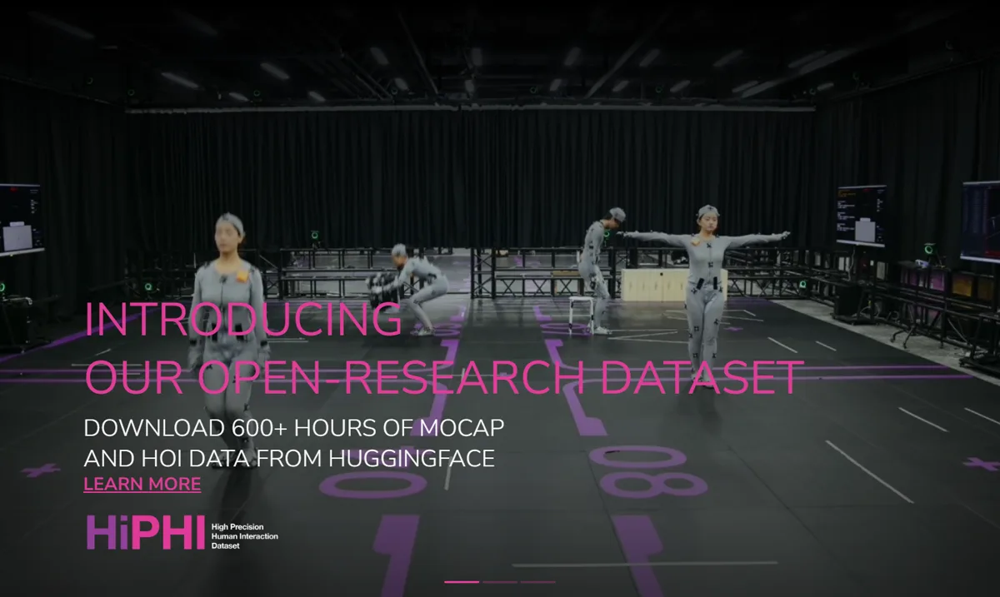
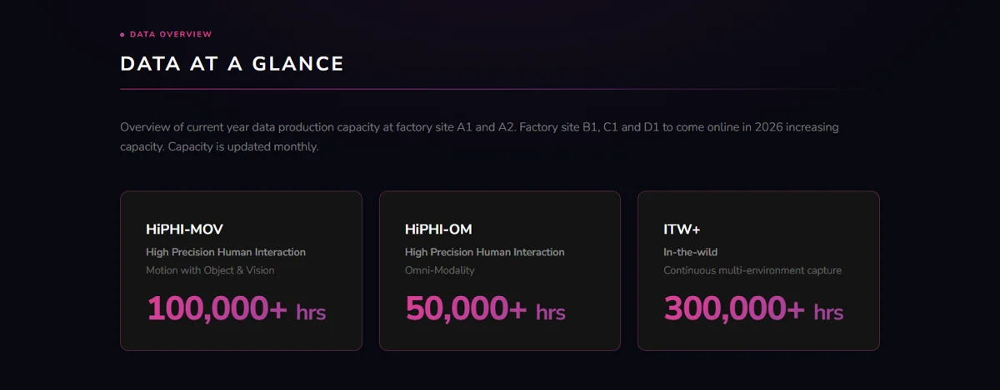
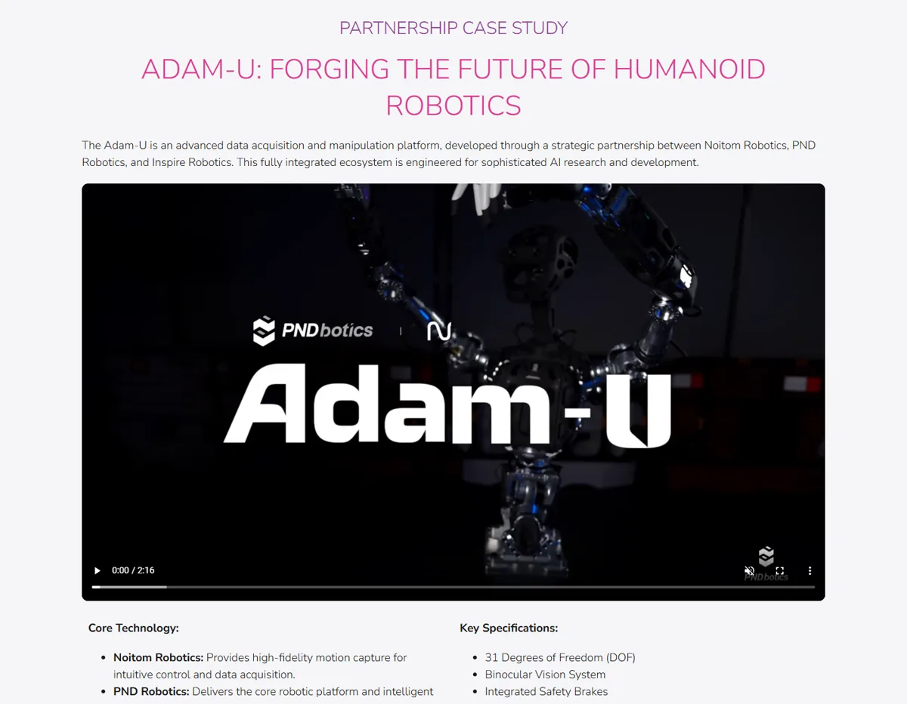
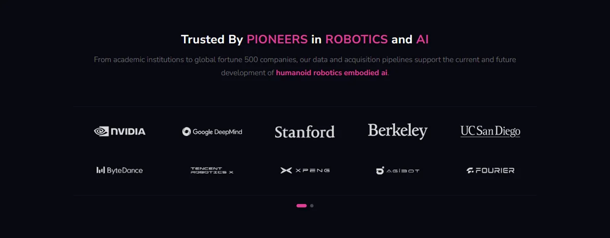

诺亦腾机器人诺亦腾机器人科技（北京）有限公司（Noitom Robotics，母公司为诺亦腾科技）
具身智能行业的“卖铲人”：从十多年的动作捕捉业务孵化出来，不造机器人，只做机器人训练所需的人类动作、触觉、视觉等多模态数据，以及遥操作采集系统；2026 年发布 ModalityNet 数据平台，年数据产能合计超 45 万小时，客户包括 NVIDIA、Google DeepMind、字节、小鹏、智元、傅利叶等。
一页结论
- 明确不做本体：以“数据”为核心交付界面，服务机器人本体企业、具身模型团队与高校科研S4S6
- 数据是具身智能的瓶颈：语言模型有互联网文本，机器人需要的动作轨迹、手部操作、触觉与环境交互数据只能在物理世界逐条采集S4
- 以人为中心的中间层数据：提出四层数据金字塔，聚焦介于真机遥操作与互联网视频之间的人类全模态数据，并通过跨本体映射复用到不同机器人S3
- 客户覆盖中美头部：ModalityNet 列出的合作方包括 NVIDIA、Google DeepMind、斯坦福、伯克利、字节跳动、腾讯 Robotics X、小鹏、智元、傅利叶S1
- 国家队资本加持：Pre-A++ 轮投资方包括北京、上海人工智能产业投资基金、深创投、中金资本等S4
01公司介绍
| 项目 | 内容 |
|---|---|
| 公司 | 诺亦腾机器人科技（北京）有限公司，总部北京；母公司诺亦腾科技 2012 年成立S4S6 |
| 官网 | noitomrobotics.com；数据平台 modalitynet.comS1S2 |
| 创始团队 | 创始人兼 CEO 戴若犁博士；联合创始人兼首席科学家韩磊博士S3S4 |
| 母公司业务 | 惯性与光惯混合动作捕捉（PN Hybrid、PN Link、PN Studio），服务影视、游戏、VR/AR、数字人S4S5 |
| 融资 | 2026-06 Pre-A++ 轮数亿元（北京市人工智能产业投资基金、上海人工智能产业系列基金、深创投、建发、广发信德、中金资本、元禾璞华等；老股东君联、五源、经纬等追加）；2026-10 Pre-A+++ 轮（汇融基金独家）S4S6 |

02公司战略
诺亦腾机器人的定位是具身智能的“数据基础设施”：把人类与物理世界交互的数据，变成可规模化生产、可评估、可复用的产品。
- 卖铲人路线：在本体大战之外，做所有机器人公司都绕不开的数据环节，被媒体比作具身智能领域的“台积电”S4
- 技术迁移：把十多年的动捕精度、标定流程和数据治理能力迁移到机器人数据S2S4
- 数据框架：四层数据金字塔，从第一层到最后一层具身特异性降低、多样性与泛化能力增强；ModalityNet 聚焦以人为中心的中间层S3
- 生态合作：与智象未来合作生成视频数据，与黎曼动力共建百万小时具身数据闭环S7S8
03产品定位与产品线
| 产品 | 定位 | 说明 |
|---|---|---|
| HiPHI-MOV 数据集 | 机器人行走与移动操作的“动作先验”S1S3 | 人体全身动作、手部姿态、物体网格与轨迹、第一人称与侧视视觉S3 |
| HiPHI-OM 数据集 | 精细灵巧操作的“交互先验”S1S3 | 全身与手部动作、手部触觉、物体网格、多视角 RGB-D，置信度接近真值S3 |
| ITW+ 数据集 | 真实环境的“分布先验”S1S3 | 非受控环境的人类行为、第一人称 RGB-D、音频S3 |
| 遥操作系统（Project T） | 为机器人厂商提供动捕设备与远程操控采集方案S4 | 端到端、低延迟双向遥操作S2 |
| 数据服务 | 采集、清洗、标注、治理与质检全流程S2 | 支持 ROS、Isaac Sim、MuJoCo 等平台S2 |

04主要功能与技术路线
合作本体
与 PNDbotics、因时机器人联合打造 Adam-U 数据采集与操作平台（31 自由度）S2

05解决方案与场景
| 客户类型 | 方案 | 案例 |
|---|---|---|
| 机器人本体企业 | 遥操作采集系统 + 定制数据S2S4 | 小鹏、智元、傅利叶（ModalityNet 列出）S1 |
| 具身模型团队 | 多模态训练数据、跨本体映射S6 | 黎曼动力 Riemann-1.0 世界动作模型S8 |
| 科技公司与研究院 | 数据集与联合研究S1 | NVIDIA、Google DeepMind、字节跳动、腾讯 Robotics XS1 |
| 高校 | 开放研究数据集S2 | 斯坦福、伯克利、加州大学圣地亚哥分校S1 |
| 视频生成 | 合作生成具身视频数据S7 | 智象未来，预计年内产出数万小时S7 |

06商业模式
| 模式 | 说明 |
|---|---|
| 数据集授权 | ModalityNet 数据集获取（注册制）S1S3 |
| 定制数据生产 | 按客户任务采集、标注与交付S3 |
| 设备与系统 | 动捕设备、遥操作采集方案（继承母公司产品）S4S5 |
| 模型训练合作 | 与模型团队共建数据闭环S3S8 |
07上下游供应链与渠道
诺亦腾机器人
采集、处理、标注、质检、跨本体映射S6
08主要客户与落地
09营收与财务
10落地痛点
11近期动态
12潜在风险分析意见
| 风险 | 表现 | 可能程度 |
|---|---|---|
| 技术路线变化 | 若仿真、视频生成或机器人自采数据足够好，人类采集数据的需求可能下降（分析意见） | 中 |
| 大客户自建 | 头部机器人公司自建数采中心（如智元、优必选）S1 | 中 |
| 同类竞争 | 光轮智能等数据公司同样提供人类数据平台S8 | 中 |
| 商业化不透明 | 收入与客户付费规模未披露（分析意见） | 中 |
“可能程度”为基于现有公开信息的判断，不是量化预测。
13综合结论分析意见
优势
- 十多年动捕精度与工程积累
- 中美头部客户名单
- 规模化数据工厂
劣势
- 收入未披露
- 依赖下游模型验证数据价值
机会
- 具身模型对数据的持续需求
- 数据标准与跨本体映射
- 国家与地方 AI 基金资源
威胁
- 头部公司自建数采
- 合成与视频数据替代
对 AI 产品团队的启示
- 在热门赛道里做“铲子”：本体与模型竞争激烈时，数据基础设施是所有人都需要的确定性环节。
- 老技术找到新用途：动作捕捉从影视游戏迁移到机器人训练，是典型的能力复用。
- 数据产品要讲清“怎么用”：四层金字塔、跨本体映射、质检流程，让数据从原材料变成可直接训练的产品。
- 开源数据是获客手段：600+ 小时开放数据降低客户试用门槛。
信息缺口
以下信息未找到可靠的公开来源，本报告不做推测。
- 收入、客户数与单价
- 各轮融资金额与估值
- 与列出合作方的具体合作形式
- 跨本体映射的效果评测
- 数据工厂的实际产出
来源
A 官方 · B 权威媒体或第三方 · C 社区（仅用于口碑与线索）。访问日期均为 2026-11-02。
- S1 · AModalityNet 数据平台（数据概览、合作方）诺亦腾机器人 · 2026-11-02 访问
- S2 · A诺亦腾机器人官网（服务、Adam-U 案例、开放数据）诺亦腾机器人 · 2026-11-02 访问
- S3 · B三大数据集，45万小时级产能：诺亦腾机器人ModalityNet正式发布艾邦机器人 · 2026-06
- S4 · B数亿元融资落地！具身智能与人形机器人研发商诺亦腾机器人再获融资机器人圈（新浪财经） · 2026-06-17
- S5 · A诺亦腾动作捕捉产品官网诺亦腾科技 · 2026-11-02 访问
- S6 · B诺亦腾机器人完成Pre-A+++轮融资，专注于PhysicalAI全模态数据服务投资界 · 2026-10-26
- S7 · B智象未来携手诺亦腾机器人，共创具身智能数据新范式IT 之家 · 2026-03-30
- S8 · B黎曼动力携手光轮智能与诺亦腾机器人，剑指2026年百万小时具身智能数据建设36 氪 · 2026-08-06